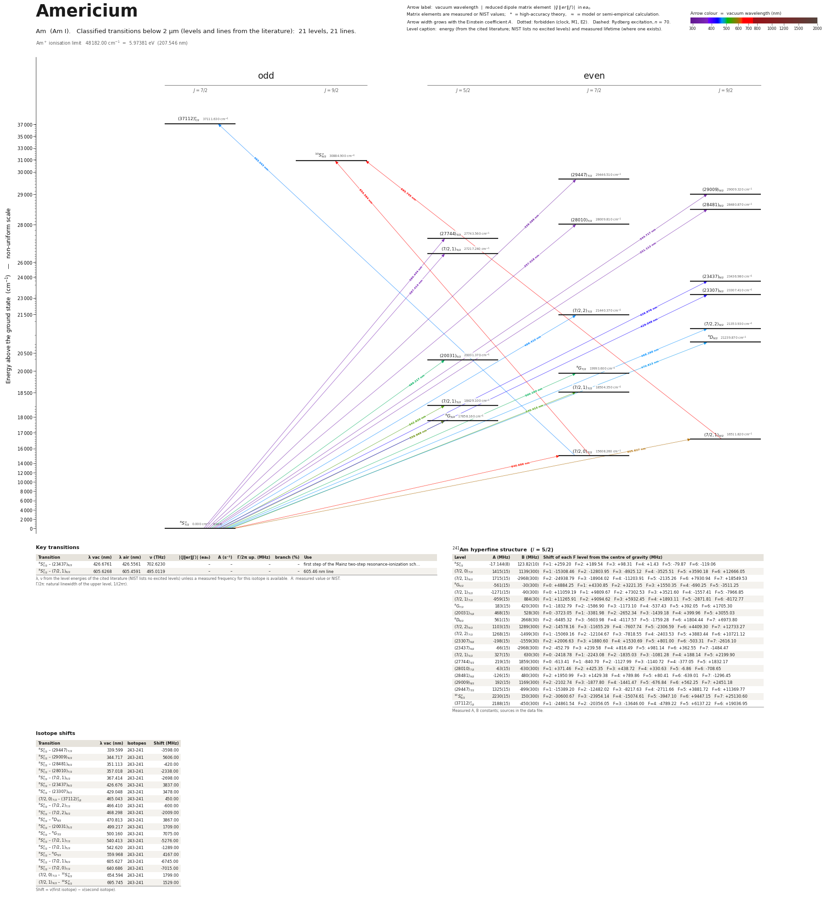

Americium energy level diagram
Energy levels and transitions of neutral americium (Am I): 21 levels and 21 classified lines below 2 µm taken from the cited literature, each line with its vacuum wavelength and frequency. The NIST Atomic Spectra Database lists only the ground level and the ionisation limit of americium, so the level energies on this page are those of the literature sources named below.
Hover a line or a level to isolate it, click to keep it selected. Scroll to zoom, drag to move.

Download: diagram (PDF) diagram (SVG) transitions (CSV) levels (CSV) source code

Key transitions of americium
| Transition | λ vac (nm) | λ air (nm) | ν (THz) | |⟨J‖er‖J′⟩| (ea₀) | A (s⁻¹) | Γ/2π up. (MHz) | branch (%) | Use |
|---|---|---|---|---|---|---|---|---|
| 8S°7/2 – (23437)9/2 | 426.6761 | 426.5561 | 702.6230 | – | – | – | – | first step of the Mainz two-step resonance-ionization sch… |
| 8S°7/2 – (7/2,1)9/2 | 605.6268 | 605.4591 | 495.0119 | – | – | – | – | 605.46 nm line |
λ, ν from the level energies of the cited literature (NIST lists no excited levels) unless a measured frequency for this isotope is available. A: measured value or NIST. Γ/2π: natural linewidth of the upper level, 1/(2πτ).
241Am hyperfine structure (I = 5/2)
| Level | A (MHz) | B (MHz) | Shift of each F level from the centre of gravity (MHz) |
|---|---|---|---|
| 8S°7/2 | -17.144(8) | 123.82(10) | F=1: +259.20 F=2: +189.54 F=3: +98.31 F=4: +1.43 F=5: -79.87 F=6: -119.06 |
| (7/2,0)7/2 | 1415(15) | 1139(300) | F=1: -15308.46 F=2: -12803.95 F=3: -8925.12 F=4: -3525.51 F=5: +3590.18 F=6: +12666.05 |
| (7/2,1)9/2 | 1715(15) | -2968(300) | F=2: -24938.79 F=3: -18904.02 F=4: -11203.91 F=5: -2135.26 F=6: +7930.94 F=7: +18549.53 |
| 8G5/2 | -561(15) | -30(300) | F=0: +4884.25 F=1: +4330.85 F=2: +3221.35 F=3: +1550.35 F=4: -690.25 F=5: -3511.25 |
| (7/2,1)5/2 | -1271(15) | -90(300) | F=0: +11059.19 F=1: +9809.67 F=2: +7302.53 F=3: +3521.60 F=4: -1557.41 F=5: -7966.85 |
| (7/2,1)7/2 | -959(15) | 884(30) | F=1: +11265.91 F=2: +9094.62 F=3: +5932.45 F=4: +1893.11 F=5: -2871.81 F=6: -8172.77 |
| 8G7/2 | 183(15) | 420(300) | F=1: -1832.79 F=2: -1586.90 F=3: -1173.10 F=4: -537.43 F=5: +392.05 F=6: +1705.30 |
| (20031)5/2 | 468(15) | 528(30) | F=0: -3723.05 F=1: -3381.98 F=2: -2652.34 F=3: -1439.18 F=4: +399.96 F=5: +3055.03 |
| 8D9/2 | 561(15) | 2668(30) | F=2: -6485.32 F=3: -5603.98 F=4: -4117.57 F=5: -1759.28 F=6: +1804.44 F=7: +6973.80 |
| (7/2,2)9/2 | 1103(15) | 1289(300) | F=2: -14578.16 F=3: -11655.29 F=4: -7607.74 F=5: -2306.59 F=6: +4409.30 F=7: +12733.27 |
| (7/2,2)7/2 | 1268(15) | -1499(30) | F=1: -15069.16 F=2: -12104.67 F=3: -7818.55 F=4: -2403.53 F=5: +3883.44 F=6: +10721.12 |
| (23307)9/2 | -198(15) | -1559(30) | F=2: +2006.63 F=3: +1880.60 F=4: +1530.69 F=5: +801.00 F=6: -503.31 F=7: -2616.10 |
| (23437)9/2 | -66(15) | -2968(300) | F=2: -452.79 F=3: +239.58 F=4: +816.49 F=5: +981.14 F=6: +362.55 F=7: -1484.47 |
| (7/2,1)5/2 | 327(15) | 630(30) | F=0: -2418.78 F=1: -2243.08 F=2: -1835.03 F=3: -1081.28 F=4: +188.14 F=5: +2199.90 |
| (27744)5/2 | 219(15) | 1859(300) | F=0: -613.41 F=1: -840.70 F=2: -1127.99 F=3: -1140.72 F=4: -377.05 F=5: +1832.17 |
| (28010)7/2 | -63(15) | -630(300) | F=1: +371.46 F=2: +425.35 F=3: +438.72 F=4: +330.63 F=5: -6.86 F=6: -708.65 |
| (28481)9/2 | -126(15) | 480(300) | F=2: +1950.99 F=3: +1429.38 F=4: +789.86 F=5: +80.41 F=6: -639.01 F=7: -1296.45 |
| (29009)9/2 | 192(15) | 1169(300) | F=2: -2102.74 F=3: -1877.80 F=4: -1441.47 F=5: -676.84 F=6: +562.25 F=7: +2451.18 |
| (29447)7/2 | 1325(15) | -899(300) | F=1: -15389.20 F=2: -12482.02 F=3: -8217.63 F=4: -2711.66 F=5: +3881.72 F=6: +11369.77 |
| 10S°9/2 | 2230(15) | 150(300) | F=2: -30600.67 F=3: -23954.14 F=4: -15074.61 F=5: -3947.10 F=6: +9447.15 F=7: +25130.60 |
| (37112)°7/2 | 2188(15) | -450(300) | F=1: -24861.54 F=2: -20356.05 F=3: -13646.00 F=4: -4789.22 F=5: +6137.22 F=6: +19036.95 |
Measured A, B constants; sources in the data file.
Isotope shifts
| Transition | λ vac (nm) | Isotopes | Shift (MHz) |
|---|---|---|---|
| 8S°7/2 – (29447)7/2 | 339.599 | 243-241 | -3598.00 |
| 8S°7/2 – (29009)9/2 | 344.717 | 243-241 | 5606.00 |
| 8S°7/2 – (28481)9/2 | 351.113 | 243-241 | -420.00 |
| 8S°7/2 – (28010)7/2 | 357.018 | 243-241 | -2338.00 |
| 8S°7/2 – (7/2,1)5/2 | 367.414 | 243-241 | -2698.00 |
| 8S°7/2 – (23437)9/2 | 426.676 | 243-241 | 3837.00 |
| 8S°7/2 – (23307)9/2 | 429.048 | 243-241 | 3478.00 |
| (7/2,0)7/2 – (37112)°7/2 | 465.043 | 243-241 | 450.00 |
| 8S°7/2 – (7/2,2)7/2 | 466.410 | 243-241 | -600.00 |
| 8S°7/2 – (7/2,2)9/2 | 468.298 | 243-241 | -2009.00 |
| 8S°7/2 – 8D9/2 | 470.813 | 243-241 | 3867.00 |
| 8S°7/2 – (20031)5/2 | 499.217 | 243-241 | 1709.00 |
| 8S°7/2 – 8G7/2 | 500.160 | 243-241 | 7075.00 |
| 8S°7/2 – (7/2,1)7/2 | 540.413 | 243-241 | -5276.00 |
| 8S°7/2 – (7/2,1)5/2 | 542.620 | 243-241 | -1289.00 |
| 8S°7/2 – 8G5/2 | 559.968 | 243-241 | 4167.00 |
| 8S°7/2 – (7/2,1)9/2 | 605.627 | 243-241 | -6745.00 |
| 8S°7/2 – (7/2,0)7/2 | 640.686 | 243-241 | -7015.00 |
| (7/2,0)7/2 – 10S°9/2 | 654.594 | 243-241 | 1799.00 |
| (7/2,1)9/2 – 10S°9/2 | 695.745 | 243-241 | 1529.00 |
Shift = ν(first isotope) − ν(second isotope).
Listed Am transitions below 2 µm
| Lower level | Upper level | λ vacuum (nm) | λ air (nm) | ν (THz) | Type | |⟨J‖er‖J′⟩| (ea₀) | A (s⁻¹) | Branching (%) | Source of matrix element / A |
|---|---|---|---|---|---|---|---|---|---|
| 8S°7/2 | (29447)7/2 | 339.5988 | 339.5014 | 882.7842 | E1 | – | – | – | – |
| 8S°7/2 | (29009)9/2 | 344.7168 | 344.6180 | 869.6775 | E1 | – | – | – | – |
| 8S°7/2 | (28481)9/2 | 351.1129 | 351.0125 | 853.8350 | E1 | – | – | – | – |
| 8S°7/2 | (28010)7/2 | 357.0178 | 356.9159 | 839.7130 | E1 | – | – | – | – |
| 8S°7/2 | (27744)5/2 | 360.4440 | 360.3412 | 831.7310 | E1 | – | – | – | – |
| 8S°7/2 | (7/2,1)5/2 | 367.4142 | 367.3096 | 815.9523 | E1 | – | – | – | – |
| 8S°7/2 | (23437)9/2 | 426.6761 | 426.5561 | 702.6230 | E1 | – | – | – | – |
| 8S°7/2 | (23307)9/2 | 429.0481 | 428.9274 | 698.7386 | E1 | – | – | – | – |
| (7/2,0)7/2 | (37112)°7/2 | 465.0434 | 464.9132 | 644.6548 | E1 | – | – | – | – |
| 8S°7/2 | (7/2,2)7/2 | 466.4099 | 466.2793 | 642.7661 | E1 | – | – | – | – |
| 8S°7/2 | (7/2,2)9/2 | 468.2979 | 468.1668 | 640.1747 | E1 | – | – | – | – |
| 8S°7/2 | 8D9/2 | 470.8127 | 470.6810 | 636.7553 | E1 | – | – | – | – |
| 8S°7/2 | (20031)5/2 | 499.2170 | 499.0777 | 600.5254 | E1 | – | – | – | – |
| 8S°7/2 | 8G7/2 | 500.1601 | 500.0206 | 599.3931 | E1 | – | – | – | – |
| 8S°7/2 | (7/2,1)7/2 | 540.4135 | 540.2633 | 554.7465 | E1 | – | – | – | – |
| 8S°7/2 | (7/2,1)5/2 | 542.6201 | 542.4693 | 552.4905 | E1 | – | – | – | – |
| 8S°7/2 | 8G5/2 | 559.9681 | 559.8127 | 535.3742 | E1 | – | – | – | – |
| 8S°7/2 | (7/2,1)9/2 | 605.6268 | 605.4591 | 495.0119 | E1 | – | – | – | – |
| 8S°7/2 | (7/2,0)7/2 | 640.6864 | 640.5093 | 467.9239 | E1 | – | – | – | – |
| (7/2,0)7/2 | 10S°9/2 | 654.5942 | 654.4134 | 457.9821 | E1 | – | – | – | – |
| (7/2,1)9/2 | 10S°9/2 | 695.7451 | 695.5532 | 430.8941 | E1 | – | – | – | – |
Reduced dipole matrix elements follow the convention A = ω³|d|²/(3πε₀ħc³(2J′+1)), with J′ the upper level. Tags show where a number comes from: measured, NIST compilation, high-accuracy theory, or a model calculation.
Am energy levels
Am⁺ ionisation limit 48182.00 cm⁻¹ = 5.97381 eV (207.546 nm)
Sources
- Blaise & Wyart, Selected Constants: Energy Levels and Atomic Spectra of Actinides (Tables…
- Blaise & Wyart, Selected Constants: Energy Levels and Atomic Spectra of Actinides (Tables…
- Blaise & Wyart, Selected Constants: Energy Levels and Atomic Spectra of Actinides (Tables…
- Marrus, Nierenberg, Winocur, Phys. Rev. 120, 1429 (1960), abstract (atomic-beam magnetic …
Americium has no stable isotope; level energies are those of 241Am (I = 5/2) from the Blaise-Wyart compilation (archived web tables; analysis by Pulliam, unpublished, and Fred & Tomkins 1957). levels_not_in_nist holds every tabulated Am I level below 30000 cm-1 plus the upper levels of the entered lines. No Lande g values are tabulated except for 16511.82 cm-1. Hyperfine constants A and B of 241Am are tabulated for most levels in units of 10^-3 cm^-1 and are converted here to MHz (x 29.9792458); the unit is inferred from the introduction of the table (see the note on each entry) and checked on the 16511.82 cm-1 level: A = 57.2 gives a total hyperfine width 25 A = 1430, against the printed width W = 1456 x 10^-3 cm^-1. Following the introduction literally, values printed without a decimal point get an uncertainty of 0.01 cm^-1 (300 MHz), which is probably too pessimistic for B. isotope_shift_MHz with key 243-241 is derived from the level-shift column Delta-T(243-241) (ground level = 0) and means nu(243Am) - nu(241Am); the introduction of the table calls these shifts tentative for many upper levels. relative_intensity is the table intensity of the selected-wavelength list (not calibrated).
Atoms with measured data
- Lithium-632 levels, 85 lines
- Lithium-732 levels, 85 lines
- Beryllium-917 levels, 26 lines
- Sodium-2336 levels, 106 lines
- Magnesium-2418 levels, 61 lines
- Magnesium-2518 levels, 61 lines
- Potassium-3934 levels, 84 lines
- Potassium-4034 levels, 84 lines
- Potassium-4134 levels, 84 lines
- Calcium-4035 levels, 61 lines
- Calcium-4335 levels, 61 lines
- Chromium-5256 levels, 87 lines
- Chromium-5356 levels, 87 lines
- Rubidium-8536 levels, 94 lines
- Rubidium-8736 levels, 94 lines
- Strontium-8440 levels, 70 lines
- Strontium-8640 levels, 70 lines
- Strontium-8740 levels, 70 lines
- Strontium-8840 levels, 70 lines
- Cadmium-11115 levels, 21 lines
- Cadmium-11315 levels, 21 lines
- Cadmium-11415 levels, 21 lines
- Caesium-13331 levels, 79 lines
- Barium-13744 levels, 89 lines
- Barium-13844 levels, 89 lines
- Dysprosium-16139 levels, 55 lines
- Dysprosium-16239 levels, 55 lines
- Dysprosium-16339 levels, 55 lines
- Dysprosium-16439 levels, 55 lines
- Erbium-16673 levels, 90 lines
- Erbium-16773 levels, 90 lines
- Erbium-16873 levels, 90 lines
- Thulium-16972 levels, 73 lines
- Ytterbium-17118 levels, 26 lines
- Ytterbium-17318 levels, 26 lines
- Ytterbium-17418 levels, 26 lines
- Mercury-19927 levels, 47 lines
- Mercury-20127 levels, 47 lines
- Mercury-20227 levels, 47 lines